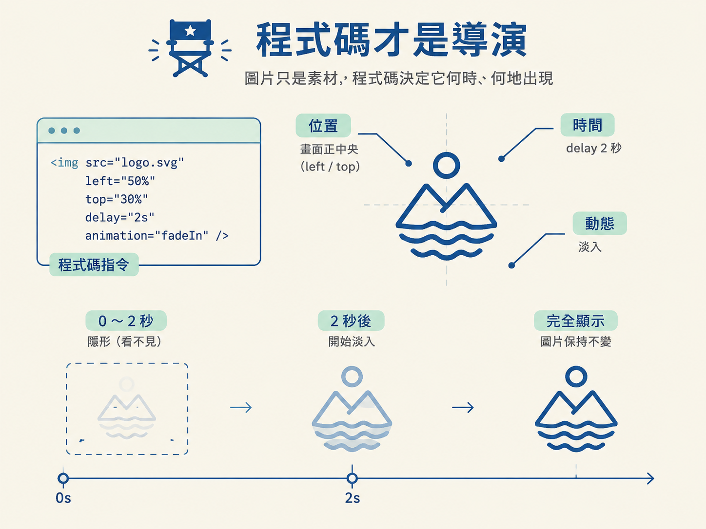

想像你在終端機輸入一句話：「請 agent 做一支 15 秒的 motion graphics 影片。」你去泡杯咖啡，回來時它說完成了。第一個直覺可能是：背後一定有某個生成式影片模型，正在像生圖工具那樣，一格一格把畫面算出來。
但你打開工作區，看到的也許不是一支影片檔，而是一堆 .html、.css、.js 檔案，旁邊還有幾張原本就放在資料夾裡的圖片。
這個落差，就是本課要先建立的關鍵心智模型：agentic 影片不是先生成一支影片，而是先寫出一個會動的網頁，再把網頁播放的結果匯出成 MP4。
因此，這條 pipeline 可以先想成兩段：
這個順序很重要。因為如果產出是黑箱，你只能重新生成；如果產出是程式碼，你就能打開它、改一行，甚至只調整一個元素。
學完這一課，你應該能說明：agentic 影片不是用生成式影片模型產生的，而是 agent 用 HTML、CSS、JavaScript 把工作區裡的圖片放到精確的時間與位置；也能指出這條產線的輸出是「先做出一個網頁，再匯出 MP4」。
先處理最容易誤會的地方：那些看起來很炫的 motion graphics，在製作過程中沒有用到生成式 AI 影片模型。沒有人把提示詞丟進 Sora、Runway 之類的工具，也不是模型先「想像」出一段畫面，再把它播放出來。
畫面上的動作、文字與轉場，都是由程式碼安排的。把一支 demo 影片拆開來看，每個你看到的元素，可能只是一張放在工作區裡的圖片。agent 要做的是找到這張圖片，再用程式碼指定它：
素材本身像是舞台上的道具；真正負責排戲的，是程式碼。位置與時間由程式決定，動態呈現則來自 agent 對節奏與構圖的安排。
agent 動用的不是神祕的影片魔法，而是它原本就熟悉的網頁技術：
有一個流傳很廣的測試刻意不使用 HyperFrames 或 Remotion 這兩個專門給 Claude 使用的開源影片函式庫。結果模型只靠原生網頁能力就做出了成品，反而顯示它對 HTML、CSS 與 JavaScript 這套工具鏈非常熟悉。
把「圖片」和「影片」的關係想清楚，是這個觀念的核心。圖片本身不會動，也不會自己跑到正確的位置。真正決定它何時出現、要放在哪裡，以及如何移動的，是程式碼。
下面這段是簡化示意，不是某支真實影片的原始碼。不過，當你把它放進網頁並打開時，就能看到一個清楚的結果：一張 logo 圖會被放在畫面中央，並在延遲 2 秒後淡入。
<img id="logo" src="logo.svg">
<script>
const logo = document.getElementById("logo");
// 指定位置：畫面正中央
logo.style.left = "50%";
logo.style.top = "50%";
// 指定時間：延遲 2000 毫秒後淡入
logo.animate(
[{ opacity: 0 }, { opacity: 1 }],
{ duration: 600, delay: 2000 }
);
</script>這段程式碼裡，logo.svg 是素材；left 和 top 指定位置；delay 則指定它什麼時候開始動。素材沒有改變，改變的是程式對它下的指令。

真實影片通常會同時有幾十個這樣的元素。每個元素都有自己的進場時間、停留時間與動線。當它們被疊在同一個畫面裡，並且精準對上時間，就會呈現出一支剪輯完成的 motion graphics。
所以，當你問「這段動畫在哪裡？」答案不是某個獨立的影片片段，而是一份排好時間的程式碼。
agent 會依照畫面需求選工具。形狀、粒子與 3D 物件，通常交給 Canvas 或 WebGL，也可以使用 three.js 來繪製。音樂與音效則能透過 Web Audio 直接用程式生成，甚至不必另外尋找音檔。
等網頁能夠播放之後，最後再使用內建的錄影功能，或執行一段 ffmpeg 腳本，把這個會動的網頁錄成一支 1080p、帶有聲音的 MP4。
把整個流程濃縮成一句話就是：它先做出一個可播放的網頁，再把它錄成 MP4。
網頁才是這支影片真正的母帶。你在瀏覽器裡看到的每一格畫面，都是即時算出來的；MP4 則是把這段播放過程錄下來的最終檔案。
這也說明了為什麼後面的課程可以「只改一個元素」。你修改的是母帶，也就是程式碼，而不是已經壓縮完成的影片。想讓某個元素早一點出現時，不需要重新生成整支影片，只要調整它的時間參數即可。
agentic 影片不是生成式影片模型的產物，而是 agent 用 HTML、CSS、JavaScript，加上 three.js、ffmpeg 等工具寫出來的網頁。畫面裡的圖片只是工作區中的素材，真正決定它何時、何地出現的是程式碼。因為母帶是「會動的網頁」，你才能拆開、修改並重複利用它，而不是只能重新抽樣一次黑箱結果。
所以，這一課要記住的不是某個特定函式，而是兩個彼此相連的事實：素材負責提供內容，程式碼負責安排時間與空間；網頁負責即時呈現，MP4 負責保存最後結果。
既然影片其實動用的是一整條網頁算圖工具鏈，下一步就能把它一層一層拆開：從版面到動態、從圖形到音訊，再到把網頁變成影片的那一步，看看每一層分別是誰在工作。